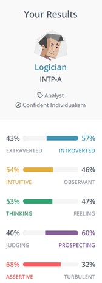
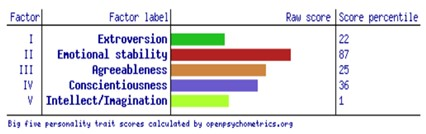
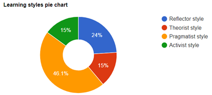

My Student eProfile
Personal Information

- n: Aldric Xavier Lim
- s#: s3949508
- @: s3949508@student.rmit.edu.au
About Me
My nationality is Australian, but my Ethnicity is Filipino. However, I do not speak my native tongue Tagalog due to living in Australia my entire life, so English would be my first language. Currently my highest education completed is high school and I am now completing a Bachelor of Information Technology. An interesting fact about me is that although my last name is “Lim” people may assume I am Chinese, which is partly true, but I am mainly Filipino due to my dad being a quarter Chinese. Other facts about me, my favourite sport is Basketball, and I am a fan of the NBA, my favourite teams being the Miami Heat and the Dallas Mavericks. Another pastime of mine are playing video games or just watching shows.
Interest in IT
What is your interest in IT?
My interest in IT is the ability to use a computer to create, develop, and support applications and software for companies and organisations to utilise. Meaning that I can eventually make a customer or co-worker’s life easier due to the software or application developed.
When did your interest in IT start?
My interest in IT started when I asked my dad what he did as his job and then he told me that he develops and maintains applications for his company, he would then tell me how he would have to work with people from people all over the globe to help develop or support application. Not only that, but I was also fortunately offered a one-week internship at my dad’s place and was able to work alongside in the IT department where I was able to input data into a broking application, which made me curious as to how they were able to develop such an app.
Why did you choose to come to RMIT?
I chose to come to RMIT to study a Bachelor of Information Technology as they are known for having an exceptional course that provides the necessary needs to be able to graduate with industry standard skillsets.
What do you expect to learn during your studies?
I expect to learn how to code in different languages so that I can make a comprehensive application. I also expect to learn machine learning and A.I as that is what intrigues me the most as of right now. Most of all, I expect that I learn the necessary skills to work collaboratively in a team to produce work up to industry standards.
Ideal Job
Description
A full-time job that allows the employee to work from home or on site. They will be working with the machine learning and data scientist team to build on and scale existing solutions. This job appeals to me as the idea of scaling already built-in machine learning solutions to greater heights. Not only that but working with co-workers to design and enhance solutions to a new extent. I would also be able to utilise engineering practices learnt throughout my course into this side of the industry.
Experience/Skills/Qualifications
This position requires at least five years of experience in a ‘professional Machine Learning Engineer role’ or at least a ‘combined Data Engineering and data science experience with cloud-based ML platform’. They also require experience with AWS’ Spark for machine learning, strong Python and SQL coding ability with GIT. A strong maturity in DevOps/MLOps to apply in data science. They will finally require the applicant to keep up with advancing ideas about machine learning and technologies.
My current Experience/Skills/Qualificiations
As of now I currently do not have majority of the qualifications. I am still undergoing learning in Python and SQL whilst also still learning the proper use of GIT. I currently do have some interpersonal skills that require me communicating efficiently and effectively with peers. I am also still learning about the basic levels of technology, so I am not up to date with new advancing technologies or ideas.
Plan
I plan to obtain these qualifications through my course but also internships and some personal projects of my own. In my course I would like to steer it towards majoring in AI and Machine Learning so that I will be able to have some sort of experience, this will be done by specifically choosing courses that lead to that pathway. I will also obtain strong python and SQL coding ability through completion of this course but also through projects on the side. Not only through my course will I obtain these skills, but I will also acquire it through internships, for example communicating with peers, working in an internship role will expose me to different types of co-workers giving me the opportunity to constantly improve my interpersonal skills.
Personal Profile
|  |   |
|---|
What the tests mean to me
These result tests show that I am an introverted, analytical, and calm individual that follows more on the concrete evidence and facts rather than the ‘what if’ or ‘could if’. These test results do somewhat reflect me to a personal degree, but not so much that it defines the way I behave or think a certain way. Whilst I may be labelled as a ‘Logician’ and my way approaching things is ‘Confident Individualism’ I still would like help and working with others when completing things rather than doing it all by myself. The learning style pie chart says that I am ’46.1%’ a pragmatist learner, despite my perspective on topics and such are of that learning style I still do like to ponder and think about the ‘Why’s’ and ‘How’s’.
Strengths
- Analytical
- Original
- Open-minded
- Curious
- Objective
Weaknesses
- Disconnected
- Insensitive
- Dissatisfied
- Impatient
- Perfection
Behaviour Influence on a team
As a Logician that approaches everyday tasks with ‘Confident Individualism’, working within a team environment may seem very foreign as they are very used to completing tasks themselves. However, they are very comfortable completing tasks themselves which can be very beneficial to a team that requires a task to be done by a person. Logicians are also very analytical which can be helpful in picking up certain errors that other team members have not seen. A Pragmatist learning style can influence the team both positively and negatively as their perspective and approach to things may seem rude and straightforward. They are however very experimental which can aid a team in testing out new things. With emotional stability being an 87 score percentile, they are very useful on a team when in very tight situations as they are able to stay calm in such times.
Forming a team
When forming a team, it is important to match people that fill up the other styles of learning, and personality types (especially extraverted or natural leaders). Taking these results into account will allow the team to overall be more versatile so that when dealing with problems, issues, or projects, the team will be able to complete them.
Project Idea
Overview
The project will be a simple chatterbot that will answer frequently asked questions that are specifically based on RMIT university. The user should input a general and common question into the chatterbot, to which the chatterbot should be able to provide a quick and clear answer to the user.
Motivation
My motivation for building this project is the idea of building a simple robot will help to expose me to a simple form of machine learning. Which will also help in my career as it will also teach me the basic and necessary skills to reach my ideal job. I will also be able to utilise this form of machine learning knowledge to attempt to create other simple projects. Not only that but having a chatterbot to answer tedious questions can help save productive time for the user instead of searching up and trying to find the right answer or result.
Description
This project will be done in Python language on the IDE PyCharm. When you are new to a place, topic or subject, you will ask very common questions as to which the people that answer it may find it tedious or annoying, which is where a ChatterBot will be very useful in dealing with this type of issue. However, the issue in this case are commonly asked questions about RMIT Melbourne University.
When the user runs the program, the ChatterBot will instantly say ‘Hello! How can I help you today?’ to which the user will be prompted to reply with a question about RMIT Melbourne University. These questions can range from topics such as location of buildings, class timetables, important dates, etc. For example, the user can ask a question like ‘Where can I find a water fountain in building 8?’ to which the ChatterBot will reply with something such as ‘Water fountains in building 8 can be found on levels 2, 3, 6…’ After the ChatterBot finishes answering their question, it will prompt the user again ‘Is there anything else I can help you with?’ The ChatterBot should be able to know when it cannot answer a question that is not related to RMIT University, instead the program will not crash and the ChatterBot will reply with ‘I’m sorry, I cannot help you with that.’
When the user is done using the service, they can reply back to the ChatterBot and say something along the lines ‘No, I am done, thank you.’ To which the ChatterBot will detect and terminate the program altogether.
Tools and Technologies
The project will be built upon PyCharm an IDE with Python as the language interpreter as I already have some experience with programming within this language. I will also be needing to install ChatterBot, which is a python library that makes it easy for users like me to make automated conversations with the chatterbot. The hardware required for this are a computer and an internet connection so that I can complete the project.
Skills Required
Skills such as being able to program and understand in the programming language Python will be required if I want to be able to develop an automated chatterbot. I will also be required to learn how to train my chatterbot by feeding it more and more responses so that it is able to provide an accurate response. Being able to implement datasets so that the chatterbot has data to tailor their answers to is a necessary skill required. It is feasible to be able to achieve the skills as there are many tutorials online that teach how to utilise and develop an own chatbot on Python. It is also feasible to find and gain access to the software as an IDE is required and only the ChatterBot Python library is needed to be download, which by the way are all free.
Outcome
If the project is successful, I will be able to gain an insight into the basics of machine learning which can help in my career and aspirations for my ideal future job. Potentially, users of this software will see how they too, can also build a simple machine learning chatterbot for their use. This will also solve the issue of individuals needing to go online and find the answer to their question when they can just utilise the ChatterBot and find their answer within a few seconds.